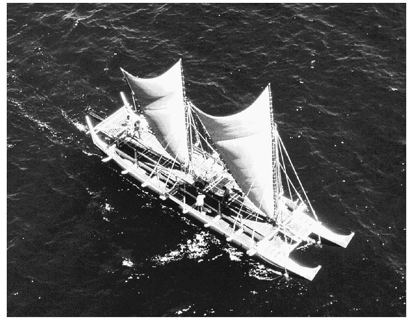
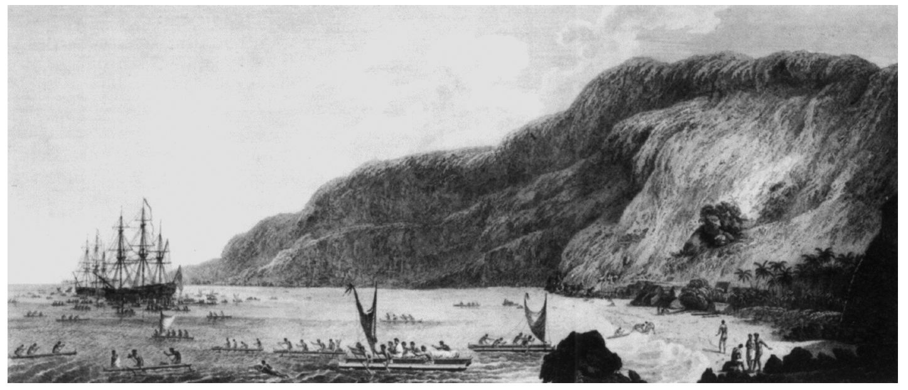
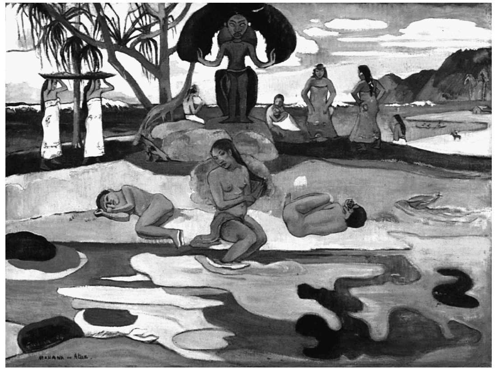
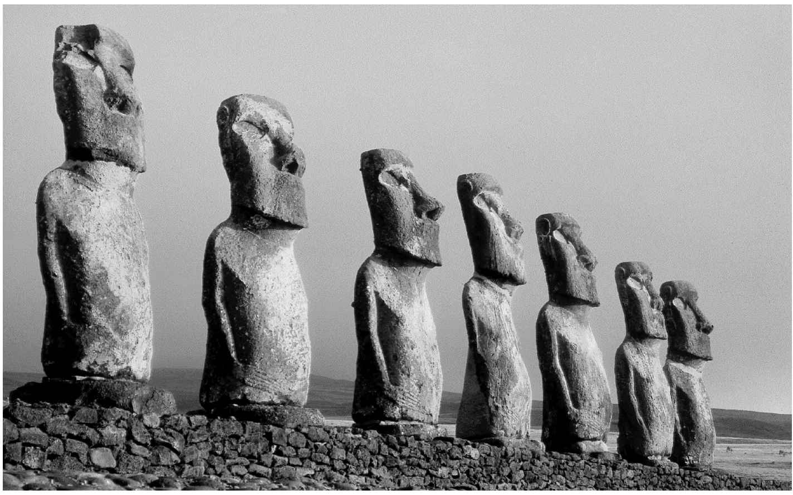

欧洲对波利尼西亚的影响比对非洲或欧亚大陆的影响大得多。显然是因为，太平洋诸岛面积小、人口少，以区区数千人之力，不可能召集起如那些拥有数亿人口和几千年历史的古老文明一样的抵抗。因此，这几千人很快就被来自所有国家的移民征服了，吸引后者的是“太平洋天堂岛”的名声。这些岛屿的吸引力为这一事实所增强：岛上没有曾经在非洲和加勒比地区大规模杀死移居那里的欧洲人的大多数热带疾病。特别要指出的是，太平洋的大多数岛上都没有致命的疟疾，原因很简单，这里没有传布疟疾的按蚊。
如在其他地区一样，大洋洲人口的扩散也包含疾病的传布和文化的分裂。随着欧洲工具和机械织布机的进口，当地的工艺被丢弃了。利用树皮织布的技术被遗忘了，建造大型双体船的技术也被遗忘了——他们的祖先曾用这种船往返于太平洋。甚至冲浪运动也变得难以负担而被摒弃。那些曾为早期探险者所羡慕的波利尼西亚人的完美牙齿也因食用欧洲食物而开始衰退了。

图239 波利尼西亚独木舟与大型双体独木舟相似，曾往返于太平洋。
比牙齿退化更严重的是新疾病的出现，如结核病、天花、痢疾和性病；现在这些疾病正一代一代往下传。因此，人口的减少使波利尼西亚人惨遭灾难，正如当年美国印第安人的情况那样。例如，在塔希提岛上，其居民在库克船长于1769年到达时共有约4万人。据传教士们说，到18世纪末时，战争和疾病已使这一数字减少到1.5万人。到19世纪30年代时，这一数字减少到9000人，最终进一步减少到6000人。

图240 詹姆斯·库克船长访问夏威夷期间，船只就停泊在凯阿拉凯夸湾。夏威夷人划着带舷外托座的小船穿过汹涌的波涛来到船边。
对于塔希提岛所发生的这一切，库克反复表达了一种絮叨的责任感。
对此，我不得不表达自己的真实看法：对于这些可怜的人来说，如果从不曾知道我们在令生活变得舒适的膳宿和艺术方面具有优越性，情况可能会好得多……要回到他们较不完美的古老发明创造中去可能已为时太晚，这些发明创造他们已看不起，并已停止使用，因为我们的被引进了。等到他们现在所拥有的铁具用坏时，他们自己的知识技能就差不多丢失了。现在，石斧的稀罕程度就像8年前的铁斧一样，现在骨针和石针已看不见了。[2]
值得注意的是，库克船长不仅对发生在太平洋岛居民身上的苦难感到惊骇，他还认识到这些苦难是某个世界范围进程中的重要部分。
……我们诱使他们精神堕落，我们带给他们物品和疾病，这些东西他们之前也许闻所未闻，却只能搅乱他们和他们的祖先一直以来享受着的幸福安详，此外别无他用。如果有谁否认这一事实，那么请他告诉我，从与欧洲人所进行的贸易中，美洲土著究竟得到了什么？[3]
另外值得注意的是，库克所同情的对象不仅有塔希岛这类环境优越的岛屿上的迷人居民，还有相对不宜居的澳大利亚大陆上欠发达的土著。他对这些土著居民的第一印象是，“对有些人来说，他们看来好像是世界上最不幸的人，但实际上他们远比我们欧洲人幸福”。库克的植物学家约瑟夫·班克斯也赞同道：“我差不多也说过，这些幸福的人就这样生活，对贫瘠，不，是一无所有，安之若素。”[4]
这些评价为欧洲人呈现了一种令人不安的异常现象。一方面，他们对自己文化上的技术优势和它提供的物质便利充满信心且沾沾自喜。而另一方面，太平洋诸岛上的居民和其他土著居民虽然技术上明显落后，且缺乏欧洲人所拥有的“发明创造”，但他们看起来很满足，甚至“更加快乐”。为了寻找一种解释，一些欧洲人阐述了“高贵的野蛮人”这一概念：贴近自然、没有文明的压力和束缚而快乐地生活。那些欧洲人，出于这样或那样的原因，对他们所生活其中的社会感到不满，对“高贵的野蛮人”这一概念特别感兴趣。对他们来说，敌人就是文明本身，于是，他们把波利尼西亚浪漫化成一个岛屿社群构成的牧歌天堂。
这种浪漫包含了相当大的羡慕成分，这一点在约瑟夫·班克斯的观察中十分明显：在塔希提岛上，“爱情是首要的工作”。他写道：这种舒适的环境之所以是可能的，是因为在岛上，男人只需做很少的工作就能养活全家，剩下充裕的时间去追求爱情。一个男人“种四棵面包果树——一份不需要一个小时就能完成的工作，就是他为他这一代所做的工作，相当于欧洲人为他的家庭年复一年地辛勤耕种谷物一样，这种闲暇就被用来谈情说爱”[5]。
随着欧洲人对太平洋诸岛居民有了更多的了解，“高贵的野蛮人”这一概念不可避免地让位于一个更加现实的评价。欧洲人逐渐意识到大洋洲文化残酷的阴暗面，包括诸如战争、杀婴、压迫性的禁忌、活人祭奠和奴隶制等社会问题，以及各种自然灾害，如时不时给岛屿以重创的飓风、海啸。
欧洲人对于波利尼西亚的矛盾心理，在传教士、艺术家和知识分子的不同反应中表现得最为明显。传教士对波利尼西亚人喜好通奸、穿极少的衣服跳舞、在礼拜日做游戏等感到厌恶。他们竭力反对这些行为，但结果并没有他们所期望的那么有效。
欧洲的艺术家和知识分子的反应更为积极，这一点在赫尔曼·梅尔维尔的小说（著名的《白鲸记》）、保罗·高更根据他在塔希提岛的经历创作的绘画作品和罗伯特·路易斯·史蒂文森的一生经历中表现得很明显；史蒂文森曾拖家携口，带着家里的物件，以患有慢性病的身体，去过夏威夷、塔希提、马克萨斯群岛，最后去了遥远的萨摩亚。
这些波利尼西亚及其居民的早期崇拜者可以从每年涌向这些岛屿的现代旅游者身上找到影子，后者从日常生活的压力中脱离出来，寻求短暂的休息。这好像是一种双方都满意的安排，旅游者享受到了短暂的休息，当地人得到了旅游者带来的丰厚收入。另一方面，即使是在波利尼西亚的一次短暂逗留，也能发现库克船长对波利尼西亚文化被长期破坏的忧思，在今天和在16世纪一样具有切肤之感。这里不仅有持续的文化破坏，还有对于个人健康的损害，对祖先出生的岛屿的毁灭。
关于文化，遥远的复活节岛上的波利尼西亚人已充分感到了威胁，于是他们建立了“文化保护组织”。创建者明确地确定了组织的基本观点：“我想睡觉我就睡觉。我想吃饭我就吃饭。我可以一个礼拜不花一分钱。如果我们不当心的话，人们将把这个岛屿变成另一个夏威夷或塔希提，那些地方唯一重要的事就是钱。”[6]

图241 作为对19世纪后期加速变化的反应，保罗·高更（1848—1903年）离开了他的法国同胞，来到南太平洋；在那里，他被一种更简朴、表面上永不改变的生活方式迷住了。在1894年创作的油画《上帝的一天》中，他将这种环境浪漫化了。
关于人的健康，库克船长在他的日记中描写了拥有完美牙齿、“走路优雅、跑步灵活”的波利尼西亚人。而那些波利尼西亚人的后代却完全不同；他们是今天多民族的夏威夷州上健康状况最糟的人群。他们的心脏病的死亡率比平均水平高出44%，癌症的死亡率高出39%，中风的死亡率高出31%，糖尿病的死亡率高出196%。[7]
比文化和物质衰退更具威胁性的是，伴随海平面上升而来的直接消失。这种上升是因为“温室效应”导致冰川和冰盖融化，造成海洋在变暖的同时扩大。尽管人们对这一趋势的规模和速度众说不一，但毫无疑问，这场史无前例且无法预测的“巨浪”正席卷波利尼西亚诸岛屿。“这些不是风暴，它们是巨浪，”马绍尔群岛的报纸编辑吉夫·约翰逊这样说道，“天气很好，突然，海水涌进了你的起居室。很显然，太平洋上正发生着一些事，而这些岛屿也感受到了。在这里，人们特别关心这件事，因为你正在谈论的恰是人类的生存问题。它使人们惊恐万状，认为他们的国家可能就要消失。”[8]

图242 七尊巨大、庄严的石像并排竖立在阿基维圣坛的石基上。这些石像是复活节岛上的拉帕努伊土著居民建造的。有600多尊石像是用“石像温床”拉诺拉拉库火山的火山岩雕成的，而且它们都面朝西方。
不只是这位马绍尔群岛的编辑一人在关注他的祖国的安全问题。美国总统克林顿在联合国环境会议（1997年6月26日）上的讲话，就对整个地球表达了同样的关注：
大气中温室气体的浓度已达到20余万年来的最高水平，并在急速攀升。科学家预言，如果这一趋势不改变，海平面下个世纪将上升2英尺或更高。在美国，路易斯安那和其他沿海地区将被淹没；在亚洲，孟加拉国17%的面积即现在居住着600万人口的土地也将失去；马尔代夫这样的岛群将从地图上消失，除非我们能逆转这些预言。[9]
[注释]
[1]D. H. K. Spate, Paradise Found and Lost（Australian National University，1988）, p. 34.
[2]Cited by A. Moorehead, The Fatal Impact：An Account of the Invasion of the South Pacific 1767—1840（Harper & Row，1966）, p. 70.
[3]Ibid.，pp. 55，56.
[4]Ibid.，p. 117.
[5]Cited by Spate, Paradise Found, p. 35.
[6]New York Times, February 6，1993.
[7]Kathryn True, “Reclaiming Tradition,” In Context, No. 39，p. 54.
[8]New York Times, March 2，1997.
[9]New York Times，June 27，1997.